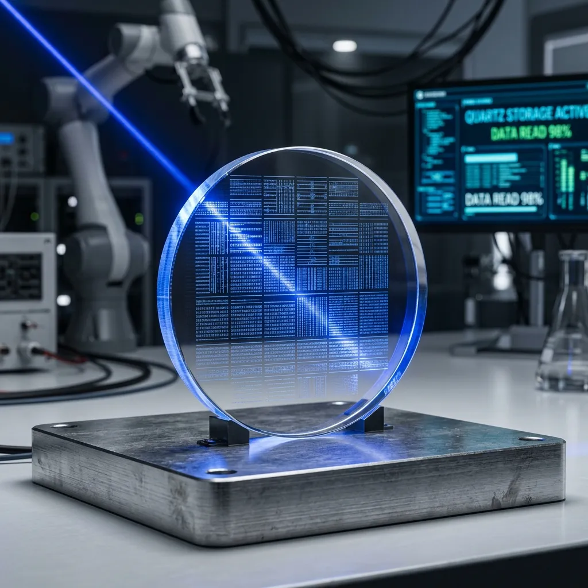
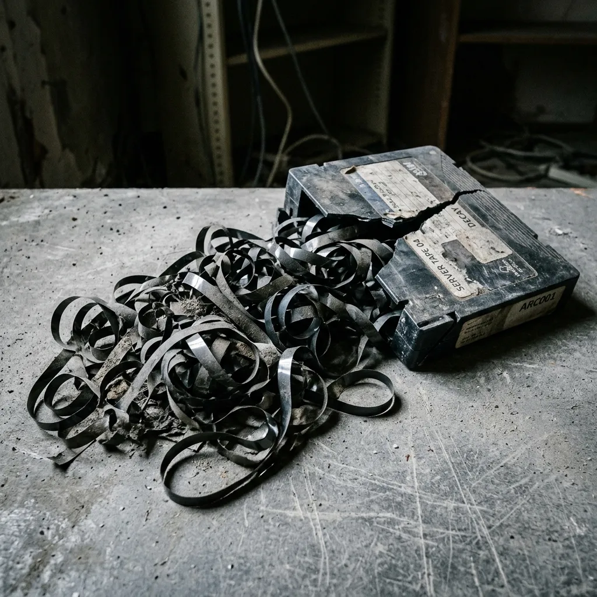
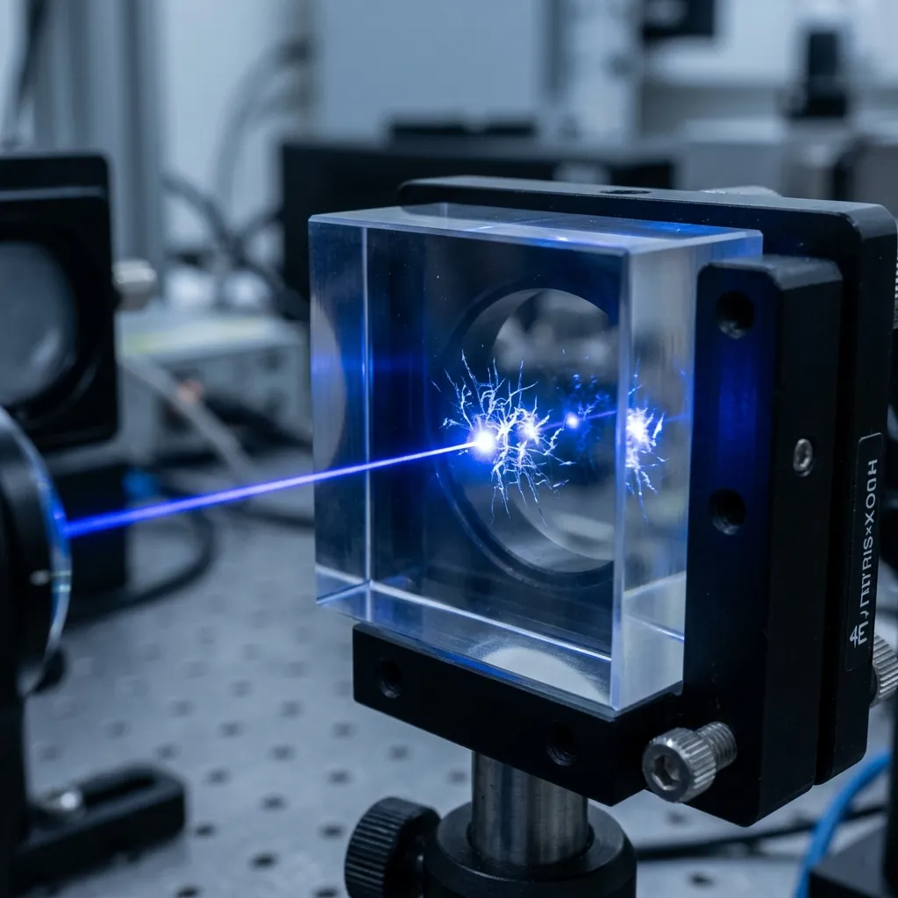
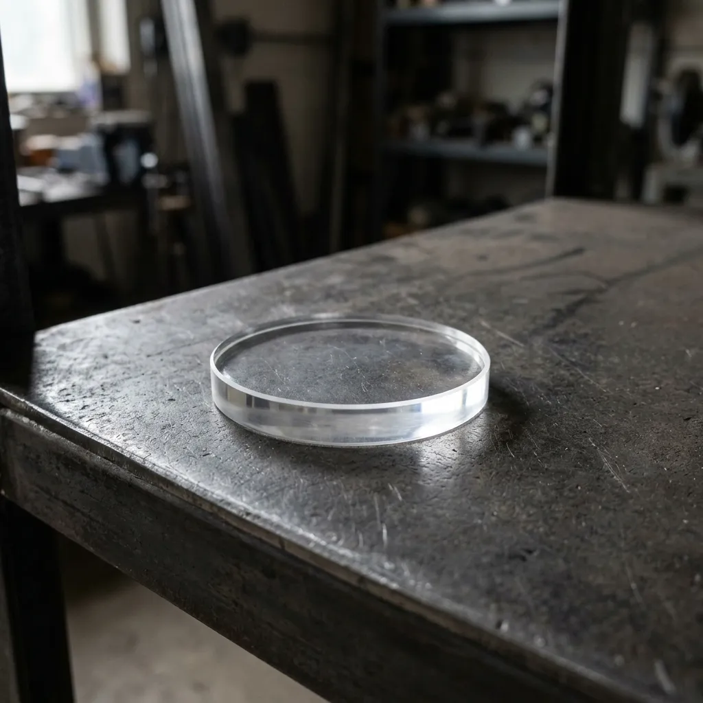

Digital Eternity in Synthetic Quartz.
Enterprise cold storage etched directly into indestructible glass by femtosecond lasers, because magnetic tape is a tragic historical accident.
Most corporations trust their most critical compliance data to magnetic tapes that quietly degrade in air-conditioned warehouses, requiring constant migration and crossing of fingers. Pellucid Memory offers a somewhat more permanent alternative. Operating from our Cambridge facility, we encode your archives into synthetic quartz silica discs using 5D optical lasers. The resulting medium is immune to electromagnetic pulses, water damage, and temperatures up to a thousand degrees. It is, for all practical intents, indestructible.

The Ephemeral Nature of Modern Archives
It is a peculiar irony of the digital age that we generate more critical data than any previous civilisation, yet choose to store it on magnetic film that begins to demagnetise the moment it is manufactured. The enterprise solution to this problem has traditionally been to buy more tape, hire more staff, and continuously copy the decaying data onto slightly less decayed media every five years. We find this exhausting.
Pellucid Memory abandons magnetism entirely in favour of physical geometry. Using high-repetition femtosecond lasers, we alter the physical structure of synthetic quartz at the nanoscale, creating sub-wavelength birefringence that encodes data in five dimensions—three spatial coordinates plus the size and orientation of the nanograting. A single palm-sized disc holds up to 360 terabytes of data and requires zero electricity to maintain. You can leave it on a shelf, drop it in a lake, or lose it in a fire. The data outlives the building.

Capacity & Dimensions
The form factor of standard archival media has always been a compromise between density and fragility. We eliminated the compromise. Each 120-millimetre synthetic quartz disc accommodates up to 360 terabytes of encoded geometry. This is not compressed data; it is raw, instantly verifiable structural alteration.
Thermal & EMP Tolerance
Corporate data centres spend millions annually regulating humidity and temperature to appease magnetic film. Our silica medium operates under fundamentally different physical rules. The discs are structurally stable at temperatures reaching one thousand degrees Celsius, far exceeding the combustion point of any building housing them. Furthermore, because the data is physically etched rather than magnetically aligned, it is entirely impervious to electromagnetic pulses (EMP), solar flares, and cosmic rays.
Geologic Lifespan
We do not speak of archiving in terms of decades. At standard room temperature, the nanogratings etched into the quartz possess an estimated structural half-life of 13.8 billion years. It is a timeline that renders traditional compliance windows slightly ridiculous. The medium will outlast the corporation, the vault, and arguably the geologic shelf it sits upon.
High-Paranoia Sectors
Our technology is entirely inappropriate for your daily database backups or holiday photographs. It is engineered explicitly for global compliance mandates where data loss is legally disastrous or operationally catastrophic. Pharmaceutical corporations, for instance, face stringent fifty-year retention requirements for clinical trial data, a horizon that makes traditional tape migration cycles an unmanageable liability. Similarly, national grid infrastructure blueprints and foundational aerospace engineering logs require absolute permanence against physical degradation and sabotage. By removing the fragility of the storage medium, we allow high-paranoia sectors to satisfy regulatory archivists without maintaining an endless, vulnerable chain of digital custody. The data remains exactly as it was written, immune to both time and institutional negligence.

Decoding Without Dependency
The most persistent threat to long-term archiving is not material decay, but hardware obsolescence. A perfectly preserved tape cartridge is useless if the proprietary drive required to read it no longer exists. Pellucid Memory eliminates dependency on our own hardware.
Because the data is encoded as physical geometry, it can be retrieved using standard optical microscopes equipped with basic polarisation filters. We do not bury you in proprietary formats. To guarantee independent retrieval fifty or five hundred years from now, we use a femtosecond laser to etch the open-source decoding software and full retrieval instructions in human-readable plain text around the outer rim of every disc. We provide the physics; you retain the autonomy. The proprietary hardware inevitably dies, but optical physics does not.
The Math of Zero Maintenance

The financial model of contemporary cloud storage relies on perpetual rent. Whether your data sits in a cold tier like AWS Glacier or on active servers, you are paying a monthly premium for the electricity, cooling, and migration required to keep petabytes alive over a fifty-year horizon. It is an immense carbon footprint for data you may never access. Our mathematical proposition is fundamentally different: once the data is etched into quartz, the billing stops. A Pellucid Memory disc consumes exactly zero watts of electricity to maintain its integrity. The upfront cost of laser encoding is rapidly eclipsed by the complete elimination of recurring environmental and financial maintenance, turning a permanent operational expense into a single, conclusive capital investment.
Archival Realities & FAQ
Is this suitable for active database workloads?
Absolutely not. The laser etching process is inherently slow and meticulous, designed exclusively for cold storage and final compliance archiving. If you require millisecond retrieval or frequent overwriting, continue using your current solid-state arrays.
What is the read latency for retrieving an archived file?
Once the disc is mounted under an optical microscope, decoding speed depends entirely on your local processing power and the resolution of the imaging sensor. It is faster than retrieving a tape from an offsite vault, but slower than spinning disk media.
How do you handle physical security during data transit?
We do not accept data transfers over the public internet. Physical hard drives are transported to our Cambridge facility via bonded, armed courier services, maintaining a strict chain of custody until the final quartz etching is verified.
Can the data be encrypted before it is written to glass?
Yes. In fact, we mandate it. Clients apply their own cryptographic hashing and encryption protocols before dispatch. We etch the encrypted ciphertext; we never hold the keys.
How do we securely dispose of a disc if the retention period expires?
Because synthetic quartz is virtually impossible to shred or degauss, standard destruction protocols fail. When a disc reaches the end of its legal retention mandate, we physically melt it down in an industrial furnace at 1,700°C.
What happens if Pellucid Memory ceases trading?
Nothing. The human-readable decoding instructions and open-source software are etched directly onto the outer rim of the disc itself. You will never need our permission or our hardware to read your own data.
Initiate Archival Ingest
We exclusively serve enterprise, government, and heavy industry clients with significant long-term compliance requirements. Due to the meticulous precision and time required for the femtosecond laser encoding process, our minimum initial ingest size starts at 50 terabytes. If your organisation is prepared to permanently transition away from the recurring liabilities and endless migration cycles of magnetic tape and active cloud storage, we invite your Chief Information Officer or lead archivist to arrange a formal technical consultation with our engineering team. Contact our Cambridge laboratory today to discuss security protocols, physical transit logistics, encryption standards, and scheduling availability for your initial quartz archival run.